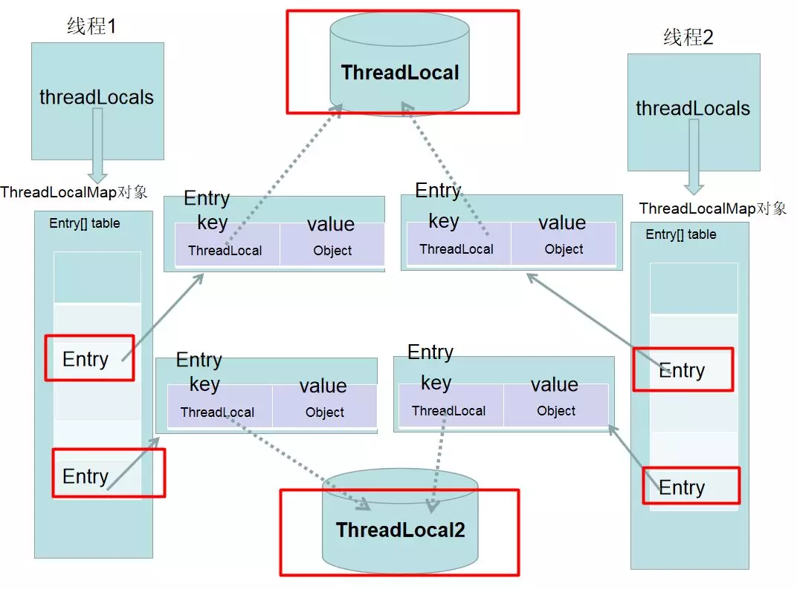

Ch3-Java 之 ThreadLocal
April 9, 2017
java.lang.ThreadLocal是一个将在多线程中为每一个线程创建单独的变量副本的类; 当使用 ThreadLocal 来维护变量时，ThreadLocal 会为每个线程创建单独的变量副本，避免因多线程操作共享变量而导致的数据不一致的情况。
1. 基本原理 #

如下图所示，每个 Thread 中都维护了一个类型为 ThreadLocal.ThreadLocalMap 的属性 threadLocals，这就意味着每个线程都有独属于自己的一段小空间（内存）。当线程向 ThreadLocal 添加数据时本质上都是添加到每个线程自己的内存空间中，这就容易理解为什么说 ThreadLocal 可以实现线程间变量隔离了。
2. 存在的问题 #
ThreadLocalMap 这个类定义的 Entry（用于存储每个<K, V>）是继承自 WeakReference。那也就是说，发生一次 GC 后，这个值可能会变成 null。但是 Entry 里面的值仍然有可能不被释放，于是就有可能发生内存泄露，所以最好的做法是将调用 threadlocal 的 remove 方法。
Java 为了最小化减少内存泄露的可能性和影响，在 ThreadLocal 的 get,set 的时候都会清除线程 Map 里所有 key 为 null 的 value。所以最怕的情况就是，threadLocal 对象设 null 了，开始发生“内存泄露”，然后使用线程池，这个线程结束，线程放回线程池中不销毁，这个线程一直不被使用，或者分配使用了又不再调用 get,set 方法，那么这个期间就会发生真正的内存泄露。
3. Entry 为什么使用弱引用 #
下面我们分两种情况讨论
- key 使用强引用：引用的 ThreadLocal 的对象被回收了，但是 ThreadLocalMap 还持有 ThreadLocal 的强引用，如果没有手动删除，ThreadLocal 不会被回收，导致 Entry 内存泄漏。
- key 使用弱引用：引用的 ThreadLocal 的对象被回收了，由于 ThreadLocalMap 持有 ThreadLocal 的弱引用，即使没有手动删除，ThreadLocal 也会被回收。value 在下一次 ThreadLocalMap 调用 set,get，remove 的时候会被清除。
比较两种情况，我们可以发现：由于 ThreadLocalMap 的生命周期跟 Thread 一样长，如果都没有手动删除对应 key，都会导致内存泄漏，但是使用弱引用可以多一层保障：弱引用 ThreadLocal 不会内存泄漏，对应的 value 在下一次 ThreadLocalMap 调用 set,get,remove 的时候会被清除。
因此，ThreadLocal 内存泄漏的根源是：由于 ThreadLocalMap 的生命周期跟 Thread 一样长，如果没有手动删除对应 key 就会导致内存泄漏，而不是因为弱引用。
4.InheritableThreadLocal #
ThreadLocal保证了对一个资源进行set/get操作，兄弟线程，父子线程互不影响。但是有时可能需要兄弟线程互不影响，但是子线程可以继承父线程的资源。那么就可以使用 InheritableThreadLocal 实现。
每个 Thread 中都维护了一个类型为 ThreadLocal.ThreadLocalMap 的属性 inheritableThreadLocals，该属性被用来存储父线程的 ThreadLocalMap，这样就可以使用父线程的资源。